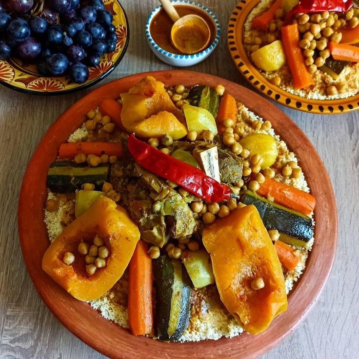

Découper la viande en morceaux et la faire revenir dans une marmite sur feu doux avec l’huile, l’oignon, 2 tomates et le concentré de tomate.
Mouiller avec l’eau et ajouter les épices Dar CHOUMICHA® pour Couscous, les pois chiches et un bouquet de coriandre.
A la mi-cuisson de la viande, ajouter les quartiers de choux, les carottes et les navets.
Lorsque la viande est presque cuite, ajouter la citrouille, la tomate restante et le piment. Lorsque la viande et les légumes sont cuits, retirer du feu.
Dresser le couscous fumant sur un plat de service, creuser un puits au milieu. Arroser le couscous de bouillon chaud avant de disposer la viande et les légumes au centre.
Servir le couscous très chaud.
Travailler avec les mains pour bien humidifier les grains de couscous et les séparer.
Couvrir avec un torchon propre et laisser reposer quelques minutes, le temps que le couscous absorbe bien l’eau.
Enduire l’intérieur du haut du couscoussier avec un peu d’huile, y disposer le couscous. Placer celui-ci sur la marmite du couscoussier à demi-remplie d’eau en ébullition.
Quand la vapeur commence à passer à travers le couscous, compter 15mn, retirer le couscoussier et renverser le couscous dans le grand plat.
L’enduire d’huile et l’arroser avec un grand verre d’eau salée. Travailler avec les doigts pour séparer les grains
Laisser reposer quelques minutes, pour que le couscous absorbe bien toute l’eau.
Répéter cette opération deux fois de suite jusqu’à ce que le couscous gonfle, cuise et devient tendre.
Enduire le couscous chaud de beurre rance avant de le dresser dans le plat de service.
